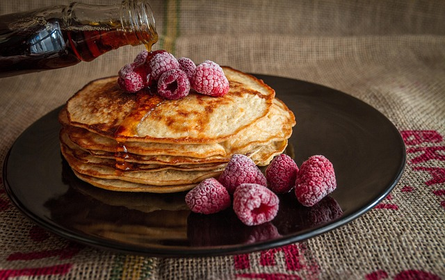

Home
Pancake Recipe

How to Make Pancakes
Pancakes are a wonderful way to wake up in the morning. They are super
easy to make and with some added fruit, can be a very delicious and
healthy breakfast. In this article we will learn how to make the best
pancakes you have ever had!
Ingredients
- Flour
- Sugar
- Salt
- Milk
- Eggs
Steps
- Sift the dry ingredients together.
- Make a well, then add the wet ingredients. Stir to combine.
- Scoop the batter onto a hot griddle or pan.
- Cook for two to three minutes, then flip.
- Continue cooking until brown on both sides.